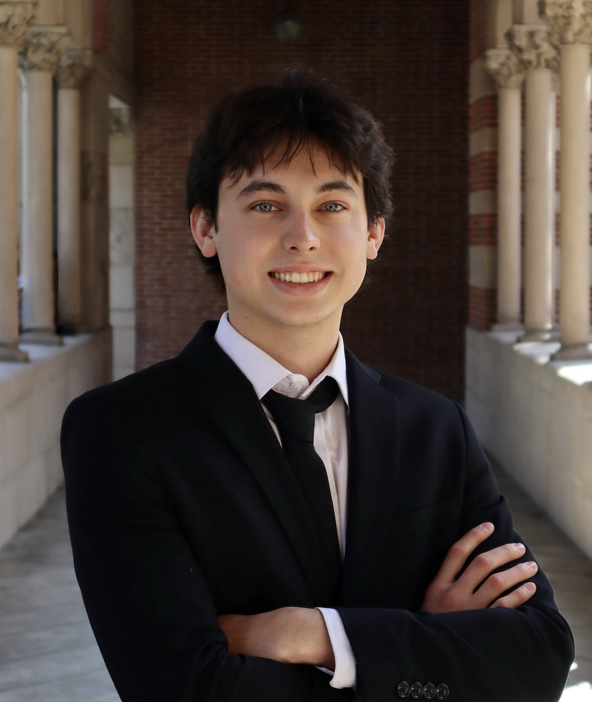

About
Biomedical Engineer · USC Viterbi · Class of 2027

Building devices that help people in real, tangible ways.
I'm a biomedical engineering student at USC, drawn to hands-on work at the intersection of engineering and medicine. I'm especially interested in medical devices, where thoughtful design and problem solving can directly improve lives. That's the kind of work I want to be part of.
I kicked off my career with an internship at Zimmer Biomet in Québec, where I worked in French as part of a dynamic, cross-functional team testing the ROSA robotic knee system. I've also studied abroad in Prague, driven by a genuine curiosity to experience cultures and ways of thinking beyond my own. These opportunities taught me how to adapt quickly, collaborate across differences, and stay flexible in the face of change.
From systems design to hands-on prototyping, I'm most excited when the work is practical, people-focused, and a little unpredictable. I'm always ready to dive in, figure things out, and contribute wherever I can make a difference.